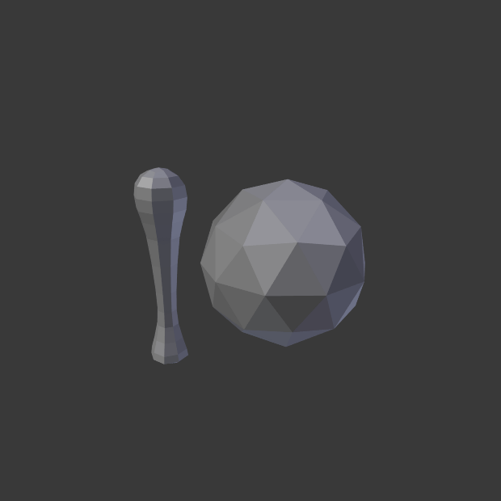

Vertices¶
参考
- 模式
物体模式
- 面板
Instance Vertices allows you to replicate child objects at the location of every vertex of the parent object.
Note
父级和子级物体的关联 物体原点 位置决定了实例化几何体与父级顶点的偏移。
- 对齐到顶点法线
根据父级网格的相应顶点法线来旋转实例化物体。
To change the axis of direction of the instanced objects, select the child object and change the Tracking Axis.
There are actually two approaches to modeling using instanced vertices. They can be used as an arranging tool, allowing you to model geometrical arrangements of objects (e.g. the columns of a Greek temple, the trees in a garden, the desks in a classroom). The object can be of any object type which Blender supports. The second approach is to use them to model an object starting from a single part of it (e.g. the spikes in a club, the thorns of a sea-urchin, the tiles in a wall, the petals in a flower).
用法¶
Instanced Vertices as an Arranging Tool¶
你需要一个基本物体(例如 树 或者 罗马柱)和一个你想要的形状的样式网格。在此情景，我们将使用一个简单场景来演示。我们将使用位置在坐标原点的猴头作为基本物体，以及一个处在同一位置的圆环作为父级网格。

一个猴头和一个圆环。¶ |
Instanced monkeys on Vertices.¶ |
{kind=link}
First, in Object Mode, select the base object and Shift-LMB to add the circle to the selection (order is very important here), and Ctrl-P or to parent the base object to the circle. Now, the circle is the parent of the monkey; if you move the circle, the monkey will follow it.
With only the circle selected, enable Instancing Vertices; a monkey head should be placed at every vertex of the circle.
The original monkey head at the center and the parent mesh are still shown in the 3D Viewport but neither will be rendered. If the placement and rotation of your monkey head are odd, you might need to clear its rotation Alt-R, scale Alt-S, location Alt-G, and origin .
重新排列¶
如果在物体模式或编辑模式选择基本物体并修改它，所有改动将影响到所有实例化物体的形状。你也可以选择父级网格来修改实例物体的排列；增加父级物体顶点也会导致新增实例物体。
请注意，在物体模式下，而不是在编辑模式下，基础物体将继承对父级网格所做的更改。 因此，在物体模式下缩放圆环将放大猴头，而在编辑模式下缩放圆环只会增大基础物体之间的距离。
方向¶
可以通过开启 实例化 面板中的 对齐到顶点法线 来控制基本物体的方向。所有基本物体的旋转将取决于父级物体网格的顶点法线方向。
To change the orientation of the instanced objects, select the base object and change the Tracking Axis.
开启方向，方向为+Y。¶ |

-Y。¶ |
{kind=link}
{kind=link}
{kind=link}
Note
The axes of an object can be made visible in the panel. To display the vertex normals of the parent mesh, enter Edit Mode and enable this visualization in the where you can also resize the displayed normals as necessary.
Instanced Vertices as a Modeling Tool¶
Very interesting models can be made using Instancing Vertices and a standard primitive. In this example, a simple tentacle was made by extruding a cube a couple of times. The tentacle object was then parented to an icosphere. With Align to Vertex Normal enabled for the parent mesh (the icosphere), the orientation of the base object (the tentacle) was adapted to the vertex normals of the parent mesh (in this case the tentacle was rotated -90° about the X axis in Edit Mode).

一条简单的触手设置为平滑着色。¶ |

父级网格上充满了实例化的触手。¶ |

对齐到顶点法向 开启后用于对齐实例化的几何体。¶ |
在前面的例子中，排列的形状和比例现在可以微调了。
To turn all instanced geometry into real objects, select the icosphere and Make Instances Real. To make the icosphere and the tentacle a single object, make sure they are all selected and go to , Ctrl-J.
See also
Other duplication methods are listed here.